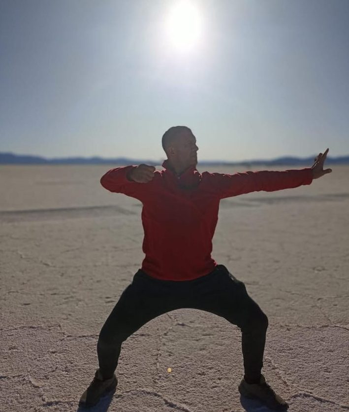
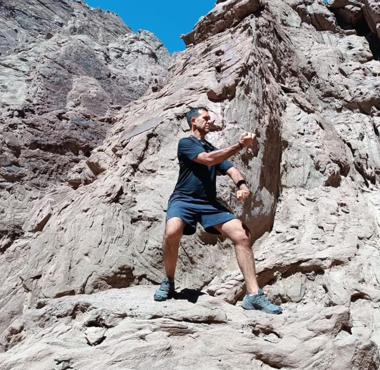
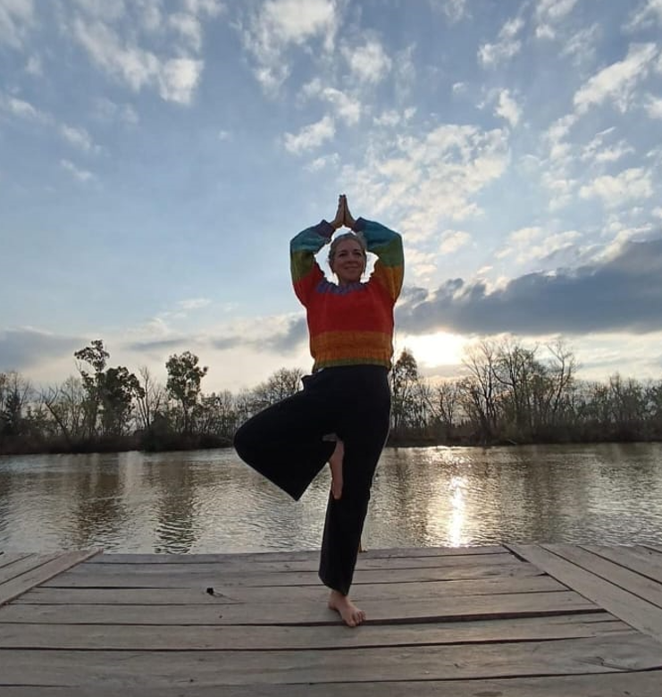
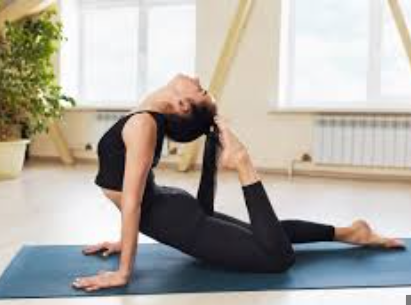
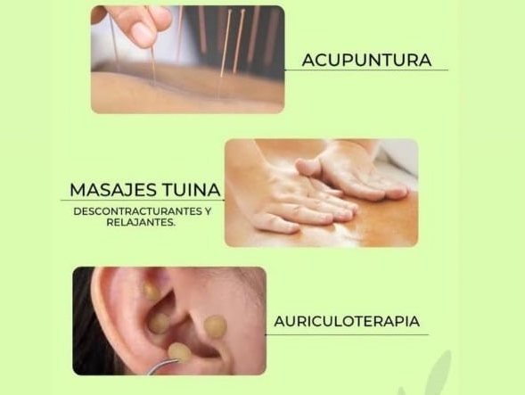
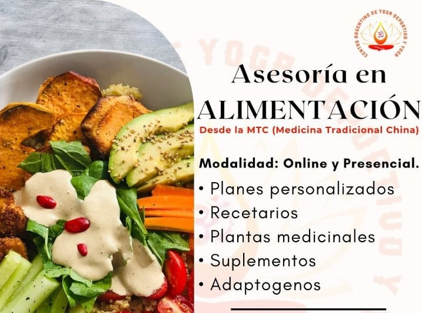

Quienes somos?
Somos una asociación dedicada a promover el bienestar integral a través de disciplinas orientales y prácticas de salud consciente. Nos especializamos en ofrecer formaciones que integran el conocimiento ancestral con técnicas modernas para la mejora de la calidad de vida. Nuestros servicios abarcan desde tratamientos terapéuticos específicos:
-
Digestivos-
Rehabilitativos-
Desintoxicantes-
Programas para adelgazar
Disciplinas
Chi Kung
Cultiva, equilibra y dirige la energía vital en el cuerpo para mejorar la salud, la vitalidad y el bienestar general.
Kempo
Se caracteriza por su enfoque en técnicas de golpeo, patadas, bloqueos y movimientos fluidos.
Yoga
Tiene como objetivo promover la salud física, mental y espiritual.
Yoga Deportivo
Combina posturas (asanas), técnicas de respiración (pranayama) y métodos de relajación diseñados para aumentar la fuerza,flexibilidad, resistencia y enfoque mental.
Para mas informacion ingresa a la seccion Clases en Centroaryogadeportivo
Tratamientos Alternativos
Acupuntura-Masajes Tuina-Auriculoterapia
Tratamientos para la ansiedad,constipacion, estres,cefaleas,migrañas,etc.
Asesoria en Alimentacion
Desintoxicacion con hierbas y alimentacion natural.
Para mas informacion ingresa a la seccion Tratamientos Alternativos